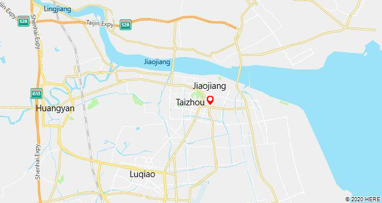

Taizhou lies in the center of Jiangsu Province and Situated on the north bank of the Yangtze River Taizhou is one of those Chinese cities with a history that stretches very deep into the past. It was first settled some five thousand years ago and is home to both the only Great Wall in Southern China and a 1500-year-old monastery that founded a school of Buddhism.
..jpg)
Get to Know Taizhou
Enjoy Your Time

Exit and Entry
Transport Informations are provided
-
Yangzhou-Taizhou Airport: Taizhou shares one airport with Yangzhou, which is Yangzhou Taizhou Airport. Visitors can take flight from this airport to many major cities in China
-
Taizhou Railway Station: operates high speed trains to/from cities in China.
-
Nanjing railway station - Taizhou railway station
-
Nanjing south railway station - Taizhou railway station:
Adress:: Jiangdu District in Yangzhou, about 20km away from Taizhou.
Adress:Wanglin Village, Huangyan District
From/To Nanjing – Taizhou [Jiangsu]
Time Duration: 1h 26m
Ticket fair: 55 CNY to 89 CNY
Time Duratoin:1h 22m - 3h 18m
Ticket Fair:99.50 CNY - 203 CNY


..jpg)